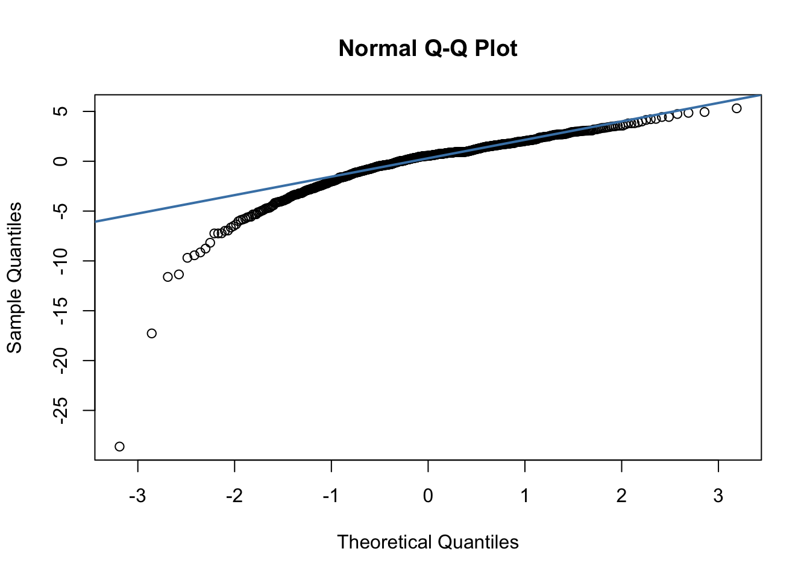

Association between public spending on education and school-aged vaccination coverage rates in the US
Author
Jannie Leung, Lin Yu, Barrett Buhler, Nhat Chau, Isha Sharma
A Description of the data folder:
vaccine.csv is the original data we received;
us_states.rds is the US map data that we used to generate Figure 1.
Other notes:
We obtained the Electoral College results data from the National Archives. This data was then added to the analytical dataset in the code chunk named electoral college.
We outlined the approach for performing residual diagnostics on level-one residuals in the code chunks titled stage one residual overall and stage one residual MMR. owever, we were unable to obtain the results due to computational limitations arising from the large sample size.
A summary of the R version and package information is listed below:
R.version
_
platform x86_64-apple-darwin20
arch x86_64
os darwin20
system x86_64, darwin20
status
major 4
minor 3.1
year 2023
month 06
day 16
svn rev 84548
language R
version.string R version 4.3.1 (2023-06-16)
nickname Beagle Scouts
sessionInfo()
R version 4.3.1 (2023-06-16)
Platform: x86_64-apple-darwin20 (64-bit)
Running under: macOS Sonoma 14.1
Matrix products: default
BLAS: /Library/Frameworks/R.framework/Versions/4.3-x86_64/Resources/lib/libRblas.0.dylib
LAPACK: /Library/Frameworks/R.framework/Versions/4.3-x86_64/Resources/lib/libRlapack.dylib; LAPACK version 3.11.0
locale:
[1] en_US.UTF-8/en_US.UTF-8/en_US.UTF-8/C/en_US.UTF-8/en_US.UTF-8
time zone: America/Toronto
tzcode source: internal
attached base packages:
[1] stats graphics grDevices utils datasets methods base
loaded via a namespace (and not attached):
[1] htmlwidgets_1.6.4 compiler_4.3.1 fastmap_1.2.0 cli_3.6.3
[5] tools_4.3.1 htmltools_0.5.8.1 rstudioapi_0.17.1 yaml_2.3.10
[9] rmarkdown_2.29 knitr_1.49 jsonlite_1.8.9 xfun_0.50
[13] digest_0.6.37 rlang_1.1.4 evaluate_1.0.3
tictoc::tic()## load R packageslibrary(here)library(tidyverse)library(tinytex)library(PupillometryR)library(DT)library(lme4)library(car)library(knitr)library(kableExtra)library(table1)library(readr)library(tibble)library(ggplot2)library(dplyr)library(sf)library(tigris)library(ggpubr)# set report formattingknitr::opts_knit$set(root.dir =here())knitr::opts_chunk$set(warning =FALSE, message =FALSE)theme_set(theme_bw(base_size =12)) # Use black/white theme and increase font size for all ggplot figures
In this project, we consulted with the Stackoverflow and Datanovia websites for data analysis.
PART 1: Exploratory Data Analysis
We cleaned the original data before model building.
## load datasetvaccine <-read_csv("data/vaccine.csv")## clean datasetvaccine_dat <- vaccine %>%# recode vaccination coverage rates with -1 as missingmutate(overall_recode =ifelse(overall ==-1, NA, overall),mmr_recode =ifelse(mmr ==-1, NA, mmr)) %>%# recode missing or 2017 school year as 2017-2018 (as per dataset description)mutate(year_recode =case_when( year =="null"~"2017-18", year =="2017"~"2017-18",TRUE~ year)) %>%# create state spending per pupil variable (in US$1million)mutate(spend_person =round(statespending2016/schagepop2016/1000, 2)) %>%# clean county namemutate(county =case_when( county =="State Of Illinois"~NA_character_, county =="BLAINE"~"Blaine", county =="ADA"~"Ada", county =="#N/A"~NA_character_, county =="Oklahoma/Tulsa"~"Oklahoma", county =="Walwroth"~"Walworth", county =="adams"~"Adams", county =="Colorado BOCS"~"Denver", county =="New Hampshire"~NA_character_,TRUE~ county)) %>%# standardize county and state with uppercasemutate(county =toupper(county)) %>%mutate(state =toupper(state)) %>%# Add state political electoral college as covariatemutate(state_political_vote =case_when( state=="ARIZONA"~"Swing State", state=="ARKANSAS"~"Republican Party", state=="CALIFORNIA"~"Democratic Party", state=="COLORADO"~"Democratic Party", state=="CONNECTICUT"~"Democratic Party", state=="FLORIDA"~"Swing State", state=="IDAHO"~"Republican Party", state=="ILLINOIS"~"Democratic Party", state=="IOWA"~"Republican Party", state=="MAINE"~"Swing State", state=="MASSACHUSETTS"~"Democratic Party", state=="MICHIGAN"~"Republican Party", state=="MINNESOTA"~"Swing State", state=="MISSOURI"~"Republican Party", state=="MONTANA"~"Republican Party", state=="NEW JERSEY"~"Democratic Party", state=="NEW YORK"~"Democratic Party", state=="NORTH CAROLINA"~"Swing State", state=="NORTH DAKOTA"~"Republican Party", state=="OHIO"~"Republican Party", state=="OKLAHOMA"~"Republican Party", state=="OREGON"~"Democratic Party", state=="PENNSYLVANIA"~"Swing State", state=="RHODE ISLAND"~"Democratic Party", state=="SOUTH DAKOTA"~"Republican Party", state=="TENNESSEE"~"Republican Party", state=="TEXAS"~"Republican Party", state=="UTAH"~"Republican Party", state=="VERMONT"~"Democratic Party", state=="VIRGINIA"~"Democratic Party", state=="WASHINGTON"~"Democratic Party", state=="WISCONSIN"~"Swing State" )) %>%# assign Swing State as reference categorymutate(state_political_vote =factor(state_political_vote, levels =c("Swing State","Democratic Party","Republican Party"))) %>%# create unique school idarrange(state, county, city, name) %>%mutate(school_id =row_number())## create dataset for schools with overall vaccination ratesvaccine_overall <- vaccine_dat %>%filter(!is.na(overall_recode))## create dataset for schools with MMR vaccination ratesvaccine_mmr <- vaccine_dat %>%filter(!is.na(mmr_recode))
Table 1: Summary Statistics
We first generated a descriptive summary of the data by outcome variable
Table 1: Table 1. Descriptive summary of variables by outcome
Outcome Variable
State (Count)
County Count (Sum)
Median County per State (Min, Max)
School Count (Sum)
Median School per State (Min, Max)
Average Spending per Person in $1000 USD
Schools in 2017–18
Schools in 2018–19
Mean Vaccination Rate (%)
MMR
21
901
38 [ 1 , 103 ]
23745
11872.5 [ 9776 , 13969 ]
10.9 ( 3.37 )
11226
17098
94.3 ( 9.3 )
Overall
17
1022
64 [ 1 , 130 ]
23865
1217 [ 215 , 5481 ]
10.34 ( 3.24 )
5459
20775
92 ( 10.58 )
Table 2: Summary Statistics (cont’d)
We also described the state electoral college results in 2016
## summarize count and percent electoral college votes by state for MMR outcomepol_vote_mmr <- vaccine_mmr %>%select(state, state_political_vote) %>%distinct() %>%mutate(n_states =n_distinct(state)) %>%group_by(state_political_vote) %>%summarise(n_state_vote_mmr =n(),perc_state_vote_mmr =round(n_state_vote_mmr / n_states*100,2)) %>%ungroup() %>%distinct() %>%mutate(state_vote_mmr =paste0(n_state_vote_mmr, " (", perc_state_vote_mmr, "%)")) %>%select(state_political_vote, state_vote_mmr)## summarize count and percent electoral college votes by state for overall outcomepol_vote_overall <- vaccine_overall %>%select(state, state_political_vote) %>%distinct() %>%mutate(n_states =n_distinct(state)) %>%group_by(state_political_vote) %>%summarise(n_state_vote =n(),perc_state_vote =round(n_state_vote / n_states*100,2)) %>%ungroup() %>%distinct() %>%mutate(state_vote =paste0(n_state_vote, " (", perc_state_vote, "%)")) %>%select(state_political_vote, state_vote)## create final tablepol_vote_table <- pol_vote_mmr %>%left_join(pol_vote_overall, by ="state_political_vote") %>%mutate(state_political_vote =as.character(state_political_vote)) %>%arrange(state_political_vote) %>%kable(col.names =c("Political party","MMR Vaccination: n (%) states","Overall Vaccination: n (%) states"),format ="html", escape =FALSE) pol_vote_table
Table 2. Vaccination rates by political party
Political party
MMR Vaccination: n (%) states
Overall Vaccination: n (%) states
Democratic Party
9 (42.86%)
8 (47.06%)
Republican Party
8 (38.1%)
6 (35.29%)
Swing State
4 (19.05%)
3 (17.65%)
Figure 1: Averaged vaccination rates
We showed the averaged vaccination rates reported by states. (States in red had reported vaccination rates, with darker shades representing higher vaccination rates. States in gray were missing vaccination rates.)
#### Calulate averaged vaccination rate by state based on public spending per student (in $1,000 USD)avg_overall_dat <-full_join( vaccine_overall %>%group_by(state) %>%summarise(avg_overall =mean(overall)),vaccine_overall %>%select(state,spend_person,statespending2016) %>%unique(),by=c("state"))# avg_overall_dat %>% datatable()avg_mmr_dat <-full_join( vaccine_mmr %>%group_by(state) %>%summarise(avg_mmr =mean(mmr)),vaccine_mmr %>%select(state,spend_person,statespending2016) %>%unique(),by=c("state"))# avg_mmr_dat %>% datatable()avg_overall_dat$type ="Overall"colnames(avg_overall_dat) <-c("state", "avg_vaccine", "spend_person", "statespending2016", "type")avg_mmr_dat$type ="MMR"colnames(avg_mmr_dat) <-c("state", "avg_vaccine", "spend_person", "statespending2016", "type")avg_vaccine_dat <-rbind(avg_overall_dat,avg_mmr_dat)avg_vaccine_dat$type <-factor(avg_vaccine_dat$type,levels =c("Overall","MMR"),labels =c("Overall","MMR") )
#### Figure 1A: Averaged Overall Vaccination Rate by State# Load US states map data# us_states <- st_as_sf(states())# saveRDS(here("data","us_states.rds"))us_states <-readRDS(here("data","us_states.rds"))overall_map <- avg_overall_dat %>%mutate(state =tolower(state))us_states <- us_states %>%mutate(NAME =tolower(NAME))geo_dat <-left_join(us_states, overall_map, by =c("NAME"="state")) %>%unique()geo_dat <-st_as_sf(geo_dat)# Create a map with text labels for each stateoverall_map_plt <-ggplot(data = geo_dat) +geom_sf(aes(fill = avg_vaccine)) +# Color the states by spending# scale_fill_viridis_c() + # Use the 'viridis' color scalescale_fill_gradientn(colors =c("#f4e1d2","#f18973", "#bc5a45", "#9e3d2e"),na.value ="#D3D3D3" ) +theme_minimal() +# Use a minimal themelabs(# title = "Public Education Spending in Each State",fill ="" ) +theme(axis.text =element_blank(),axis.ticks =element_blank() ) +coord_sf(xlim =c(-125, -66), # Longitude limits (approximate for the U.S.)ylim =c(24, 50) # Latitude limits (approximate for the U.S.) ) +xlab("")+ylab("")+# geom_sf_text(aes(label = NAME), size = 1.5, color = "black")+theme(axis.title =element_blank(),axis.text =element_blank(),axis.ticks =element_blank(),panel.grid =element_blank())
#### Figure 1B: Averaged MMR Vaccination Rate by Statemmr_map <- avg_mmr_dat %>%mutate(state =tolower(state))us_states <- us_states %>%mutate(NAME =tolower(NAME))geo_dat <-left_join(us_states, mmr_map, by =c("NAME"="state"))geo_dat <-st_as_sf(geo_dat)# Create a map with text labels for each statemmr_map_plt <-ggplot(data = geo_dat) +geom_sf(aes(fill = avg_vaccine)) +# Color the states by spending# scale_fill_viridis_c() + # Use the 'viridis' color scale# scale_fill_gradient(low = "#feb236", high = "#ff7b25")+scale_fill_gradientn(colors =c("#f4e1d2","#f18973", "#bc5a45", "#9e3d2e"),na.value ="#D3D3D3" ) +theme_minimal() +# Use a minimal themelabs(# title = "Public Education Spending in Each State",fill ="" ) +theme(axis.text =element_blank(),axis.ticks =element_blank() ) +coord_sf(xlim =c(-125, -66), # Longitude limits (approximate for the U.S.)ylim =c(24, 50) # Latitude limits (approximate for the U.S.) ) +xlab("")+ylab("")+# geom_sf_text(aes(label = NAME), size = 1.5, color = "black")+theme(axis.title =element_blank(),axis.text =element_blank(),axis.ticks =element_blank(),panel.grid =element_blank())# STUSPS# map_plts <- ggarrange(overall_map_plt,mmr_map_plt)# # ggsave(map_plts,file=here("figures","map_plts.png"),dpi=300)# ggsave(overall_map_plt,file=here("figures","overall_map_plt.png"),dpi=300)# ggsave(mmr_map_plt,file=here("figures","mmr_map_plt.png"),dpi=300)
(a) Averaged Overall Vaccination Rate by State
(b) Averaged MMR Vaccination Rate by State
Figure 1. Averaged vaccination rates reported by states
Figure 2: Averaged vaccination rates (cont’d)
Scatterplots display the averaged vaccination rates for counties and states, based on public spending per student (in $1,000 USD). Each dot represents a different county.
## prepare datascatter_plot_overall <- avg_vaccine_dat %>%filter(type=="Overall") %>%ggplot(aes(x = spend_person, y = avg_vaccine)) +geom_smooth(method ="lm", se =FALSE,color="gray",linetype="dashed",size=2) +# One overall trend linegeom_point(size=5,shape=1) +facet_grid(~type)+theme_bw()+xlab("Public Spending per Studnet per School Year(in US Dollars)")+ylab("Averaged Vaccination Rate in Each State")+theme(text =element_text(size =20), # Overall text sizeaxis.text =element_text(size =18), # Axis tick labelsaxis.title =element_text(size =22, face ="bold"), # Axis titleslegend.text =element_text(size =18), # Legend text sizelegend.title =element_text(size =20, face ="bold"), # Legend titlestrip.text =element_text(size =20, face ="bold") # Facet labels )scatter_plot_mmr <- avg_vaccine_dat %>%filter(type=="MMR") %>%ggplot(aes(x = spend_person, y = avg_vaccine)) +geom_smooth(method ="lm", se =FALSE,color="gray",linetype="dashed",size=2) +# One overall trend linegeom_point(size=5,shape=1) +facet_grid(~type)+theme_bw()+xlab("Public Spending per Student per School Year(in US Dollars)")+ylab("Averaged Vaccination Rate in Each State")+theme(text =element_text(size =20), # Overall text sizeaxis.text =element_text(size =18), # Axis tick labelsaxis.title =element_text(size =22, face ="bold"), # Axis titleslegend.text =element_text(size =18), # Legend text sizelegend.title =element_text(size =20, face ="bold"), # Legend titlestrip.text =element_text(size =20, face ="bold") # Facet labels )
Calulate average vaccination rates by county based on public spending per student (in $1,000 USD)
#### Calulate averaged vaccination rate by county based on public spending per student (in $1,000 USD)avg_overall_dat_county <-full_join( vaccine_overall %>%group_by(state,county) %>%summarise(avg_overall =mean(overall)),vaccine_overall %>%select(state,county,spend_person,statespending2016) %>%unique(),by=c("state","county"))# avg_overall_dat_county %>% datatable()avg_mmr_dat_county <-full_join( vaccine_mmr %>%group_by(state,county) %>%summarise(avg_mmr =mean(mmr)),vaccine_mmr %>%select(state,county,spend_person,statespending2016) %>%unique(),by=c("state","county"))# avg_mmr_dat_county %>% datatable()avg_overall_dat_county$type ="Overall"colnames(avg_overall_dat_county) <-c("state", "county","avg_vaccine", "spend_person", "statespending2016", "type")avg_mmr_dat_county$type ="MMR"colnames(avg_mmr_dat_county) <-c("state","county", "avg_vaccine", "spend_person", "statespending2016", "type")avg_vaccine_dat_county <-rbind(avg_overall_dat_county,avg_mmr_dat_county)avg_vaccine_dat_county$type <-factor(avg_vaccine_dat_county$type,levels =c("Overall","MMR"),labels =c("Overall","MMR") )
Plot averaged vaccination rate by county based on public spending per student (in $1,000 USD)
scatter_res <- avg_vaccine_dat_county %>%ggplot(aes(x = spend_person, y = avg_vaccine)) +geom_smooth(method ="lm", se =FALSE, color ="gray", linetype ="dashed", size =2) +# Overall trend linegeom_point(aes(color = state), size =5) +# Points from avg_overall_dat_countygeom_point(data = avg_vaccine_dat, aes(x = spend_person, y = avg_vaccine), color ="black", size =5, shape =1) +facet_wrap(~type) +#geom_line(data = avg_overall_dat, aes(x = spend_person, y = avg_vaccine), color = "black", size = 0.5, shape = 1)theme_bw() +xlab("Public Spending per Student per School Year (in US Dollars)") +ylab("Averaged Vaccination Rate in Each County") +theme(text =element_text(size =18),axis.text =element_text(size =16),axis.title =element_text(size =20, face ="bold"),legend.text =element_text(size =14,face ="bold"),legend.title =element_text(size =16,face ="bold"),strip.text =element_text(size =18, face ="bold") )scatter_res
Figure 2. Averaged Vaccination Rate by County
Plot averaged vaccination rate by state based on public spending per student (in $1,000 USD)
(a) Averaged Overall Vaccination Rate by State
(b) Averaged MMR Vaccination Rate by state
Averaged Vaccination Rate by State
PART 2: Model and Diagnostics
In this part, we show how we built our model, and how the diagnostics were done. Specifically, PART 2.1 is for overall vaccination rate outcome, and PART 2.2 is for MMR vaccination rate outcome
PART 2.1 : overall vaccination rate
Model 1: Multi-level Linear Mixed Effects model
We first fit a linear mixed effects model with random intercept for county and state (three-level model) \[
E(Y_{ijk}|b^{(3)}_{k},b^{(2)}_{jk}) = \beta_{1} + \beta_{2}\text{State spending}_k + \beta_{3}\text{School year}_i + \beta_{4}\text{State electoral college}_k + {b}^{(3)}_k\ + {b}^{(2)}_{jk}\
\]
where Y is vaccination rate (Overall and MMR) for ith school in jth county and kth state (continuous), State spending is in US dollars per student of the kth state (continuous), School year of the ith school (categorical, with 2017-18 as reference category), State electoral college is the political party that the kth state predominantly voted for in 2017-2018 (categorical, with Swing State (vote fluctuates between parties) as the reference category), \({b}_k\) is the random effect of the kth state (level 3), \({b}_jk\) is the random effect for the jth county in the kth (level 2).
Table 3: three-level fixed effects model output
Fixed effects estimates from linear mixed effects models for school-level overall vaccination rates.
We then tried some simpler models (Model 2 and Model 3) for comparison.
Model 2: Linear regression model
\[
E(Y_{ijk}) = \beta_{1} + \beta_{2}\text{State spending}_k + \beta_{3}\text{School year}_i + \beta_{4}\text{State political vote}_k
\] We fit a linear regression model without random effects (base model)
lr <-lm(overall_recode ~ spend_person + year_recode + state_political_vote, data = vaccine_overall)options(scipen=999)summary(lr)
Call:
lm(formula = overall_recode ~ spend_person + year_recode + state_political_vote,
data = vaccine_overall)
Residuals:
Min 1Q Median 3Q Max
-92.366 -1.366 2.634 5.412 13.017
Coefficients:
Estimate Std. Error t value
(Intercept) 85.49281 0.37258 229.461
spend_person 0.35871 0.03159 11.355
year_recode2018-19 3.65166 0.17320 21.084
state_political_voteDemocratic Party 0.47621 0.19566 2.434
state_political_voteRepublican Party -1.06002 0.19147 -5.536
Pr(>|t|)
(Intercept) < 0.0000000000000002 ***
spend_person < 0.0000000000000002 ***
year_recode2018-19 < 0.0000000000000002 ***
state_political_voteDemocratic Party 0.0149 *
state_political_voteRepublican Party 0.0000000312 ***
---
Signif. codes: 0 '***' 0.001 '**' 0.01 '*' 0.05 '.' 0.1 ' ' 1
Residual standard error: 10.46 on 26229 degrees of freedom
Multiple R-squared: 0.0224, Adjusted R-squared: 0.02225
F-statistic: 150.3 on 4 and 26229 DF, p-value: < 0.00000000000000022
Model 3: Two-level linear mixed effect model
We also fit linear mixed effects model with random intercept for state (two-level model)
# extract AIC and BIC from base modelinfo_crit_base <-data.frame("AIC"=AIC(lr),"BIC"=BIC(lr)) %>%mutate(Model ="Base model",Outcome ="Overall vaccination rate") # extract AIC and BIC from two-level modelinfo_crit2 <-data.frame("AIC"=AIC(lmm2),"BIC"=BIC(lmm2)) %>%mutate(Model ="Two-level",Outcome ="Overall vaccination rate")# extract AIC and BIC from three-level modelinfo_crit_table <-data.frame("AIC"=AIC(lmm3),"BIC"=BIC(lmm3)) %>%mutate(Model ="Three-level",Outcome ="Overall vaccination rate") %>%# add values from two-level model and base modelrbind(info_crit2, info_crit_base)info_crit_table
AIC BIC Model Outcome
1 176070.2 176134.8 Three-level Overall vaccination rate
2 194788.1 194845.3 Two-level Overall vaccination rate
3 197626.5 197675.6 Base model Overall vaccination rate
Since Model 1 had the lowest AIC and BIC values, we used it as our final model.
Check model diagnostics of Model 1
Diagnostics for stage-one residuals
## obtain standardized stage-one residuals (school-level) manually## this step takes a long time to run so this code chunk was excluded from the html outputcondmean <-predict(lmm3,allow.new.levels =TRUE) # obtain conditional meansy <- vaccine_overall$overall_recodestg1r <- y - condmeanestsigma2 <-sigma(lmm3)^2estsigmamat <- estsigma2 *diag(dim(vaccine_overall)[1])# Cholesky decomposition - this step takes a long timtictoc::tic()L <-chol(estsigmamat) tictoc::toc()saveRDS(L,file=here("data","L.rds"))L <-readRDS(here("data","L.rds"))tictoc::tic()stg1rstar <-solve(L) %*% stg1rtictoc::toc()saveRDS(stg1rstar,file=here("data","stg1rstar.rds"))head(stg1rstar)## compare raw stage-one residuals and standardized residualsrtype <-c(rep("Raw", length(stg1r)), rep("Standardized", length(stg1r)))resid <-c(stg1r, stg1rstar)stg1resids <-as.data.frame(cbind(rtype, as.numeric(resid)))# create plotggplot(stg1resids, aes(x = resid, fill = rtype)) +geom_histogram(position ="identity", alpha =0.5, bins =50) +labs(y ="Count", x ="Residuals", fill ="Type")## Normal QQ Plot of standardized residualsqqnorm(stg1rstar, pch =1)qqline(stg1rstar, col ="steelblue", lwd =2)qqnorm(residuals(lmm3 , type ="n")) # standardized residualqqline(residuals(lmm3 , type ="n"))## Lagged residual plotvaccine_overall %>%mutate(rhat = stg1rstar) %>%group_by(school_id) %>%mutate(rhat1 =lag(rhat)) %>%ggplot(aes(y = rhat, x= rhat1))+geom_point()+labs(y ="Standardized Residual",x ="Lagged Standardized Residual")
Random effect variances and intra-class correlation coefficients from linear mixed effects models for school-level overall vaccination rate.
## extract random effects variancesre_variance <-as.data.frame(VarCorr(lmm3))# create vector for county random effect variancere_var_county <- re_variance %>%filter(grp=="county") %>%select(vcov) %>%pull()# create vector for state random effect variancere_var_state <- re_variance %>%filter(grp=="state") %>%select(vcov) %>%pull()# create vector for error term variancere_var_resid <- re_variance %>%filter(grp=="Residual") %>%select(vcov) %>%pull()## correlation between two schools in the same county within the same statecorr_county <-as.data.frame(as.numeric(re_var_county + re_var_state) / (re_var_resid + re_var_state + re_var_county)) %>% dplyr::rename(Correlation_coefficient =1) %>%mutate(Type ="Schools in same county")## correlation between two schools in different counties but within the same statecorr_state <-as.data.frame(as.numeric(re_var_state / (re_var_resid + re_var_state + re_var_county))) %>% dplyr::rename(Correlation_coefficient =1) %>%mutate(Type ="Schools in different counties within same state")## summarise results in tablecorr_table <-rbind(corr_county, corr_state) %>%select(Type, Correlation_coefficient)corr_table
Type Correlation_coefficient
1 Schools in same county 0.2884146
2 Schools in different counties within same state 0.2134811
PART 2.2: MMR vaccination rate
In the following part, we built a model for MMR vaccination rate.
Model 4: Fit Linear Mixed Effects model
Fit main model: linear mixed effects model with random intercept for county and state (three-level model)
Table 3: three-level fixed effects model output
Fixed effects estimate from linear mixed effects models for school-level Measles, Mumps, and Rubella (MMR) vaccination rates.
## Fit linear regression model without random effects (base model)lr_mmr <-lm(mmr_recode ~ spend_person + year_recode + state_political_vote, data = vaccine_mmr)summary(lr_mmr)
Call:
lm(formula = mmr_recode ~ spend_person + year_recode + state_political_vote,
data = vaccine_mmr)
Residuals:
Min 1Q Median 3Q Max
-94.228 -0.228 2.772 3.825 9.919
Coefficients:
Estimate Std. Error t value
(Intercept) 91.3520 0.2719 335.947
spend_person 0.1951 0.0197 9.904
year_recode2018-19 0.7236 0.1294 5.591
state_political_voteDemocratic Party 1.1158 0.1696 6.577
state_political_voteRepublican Party -2.4205 0.1931 -12.534
Pr(>|t|)
(Intercept) < 0.0000000000000002 ***
spend_person < 0.0000000000000002 ***
year_recode2018-19 0.0000000227948 ***
state_political_voteDemocratic Party 0.0000000000489 ***
state_political_voteRepublican Party < 0.0000000000000002 ***
---
Signif. codes: 0 '***' 0.001 '**' 0.01 '*' 0.05 '.' 0.1 ' ' 1
Residual standard error: 9.154 on 28319 degrees of freedom
Multiple R-squared: 0.03348, Adjusted R-squared: 0.03334
F-statistic: 245.2 on 4 and 28319 DF, p-value: < 0.00000000000000022
We also compared the model fit of Model 4, 5, and 6 using AIC and BIC
## extract AIC and BIC from base modelinfo_crit_mmr_base <-data.frame("AIC"=AIC(lr_mmr),"BIC"=BIC(lr_mmr)) %>%mutate(Model ="Base model",Outcome ="MMR vaccination rate")## extract AIC and BIC from two-level modelinfo_crit_mmr2 <-data.frame("AIC"=AIC(lmm2mmr),"BIC"=BIC(lmm2mmr)) %>%mutate(Model ="Two-level",Outcome ="MMR vaccination rate")## extract AIC and BIC from three-level modelinfo_crit_table_mmr <-data.frame("AIC"=AIC(lmm3mmr),"BIC"=BIC(lmm3mmr)) %>%mutate(Model ="Three-level",Outcome ="MMR vaccination rate") %>%# add values from two-level model and base modelrbind(info_crit_mmr2, info_crit_mmr_base)info_crit_table_mmr
AIC BIC Model Outcome
1 184021.8 184087.0 Three-level MMR vaccination rate
2 203694.6 203752.4 Two-level MMR vaccination rate
3 205814.8 205864.3 Base model MMR vaccination rate
Check model diagnostics of Model 4
Diagnostics for stage-one residuals
## obtain standardized stage-one residuals (school-level) manually## this step takes a long time to run so this code chunk was excluded from the html outputcondmean <-predict(lmm3mmr, newdata = vaccine_mmr, allow.new.levels =TRUE)y <- vaccine_mmr$mmr_recodestg1r_mmr <- y - condmeanestsigma2 <-sigma(lmm3mmr)^2estsigmamat <- estsigma2 *diag(dim(vaccine_mmr)[1])# Cholesky decomposition - this step takes a long timetictoc::tic()Lmmr <-chol(estsigmamat) tictoc::toc()saveRDS(Lmmr,file=here("data","Lmmr.rds"))saveRDS(stg1r_mmr,file=here("data","stg1r_mmr.rds"))Lmmr <-readRDS(here("data","Lmmr.rds"))stg1r_mmr <-readRDS(here("data","stg1r_mmr.rds"))tictoc::tic()stg1rstar_mmr <-solve(Lmmr) %*% stg1r_mmrtictoc::toc()saveRDS(stg1rstar_mmr,file=here("data","stg1rstar_mmr.rds"))head(stg1rstar_mmr)## compare raw stage-one residuals and standardized residualsrtype_mmr <-c(rep("Raw", length(stg1r_mmr)), rep("Standardized", length(stg1r_mmr)))resid_mmr <-c(stg1r_mmr, stg1rstar_mmr)stg1resids_mmr <-as.data.frame(cbind(rtype_mmr, as.numeric(resid_mmr)))# create plotggplot(stg1resids_mmr, aes(x = resid_mmr, fill = rtype_mmr)) +geom_histogram(position ="identity", alpha =0.5, bins =50) +labs(y ="Count", x ="Residuals", fill ="Type")## Lagged residual plotvaccine_mmr %>%mutate(rhat = stg1rstar_mmr) %>%group_by(school_id) %>%mutate(rhat1 =lag(rhat)) %>%ggplot(aes(y = rhat, x= rhat1))+geom_point()+labs(y ="Standardized Residual",x ="Lagged Standardized Residual")## Normal QQ Plot of standardized residualsqqnorm(stg1rstar_mmr, pch =1)qqline(stg1rstar_mmr, col ="steelblue", lwd =2)qqnorm(residuals(lmm3mmr , type ="n")) # standardized residualqqline(residuals(lmm3mmr , type ="n"))## Plot standardized residuals against predicted meanyhat <-predict(lmm3mmr)plot(y = stg1rstar_mmr, x = yhat)
Diagnostics of random effects
## Normal qqplot of the random effects: county-level random effectsbjkhat <-ranef(lmm3mmr, condVar =TRUE)$county %>%pull()qqnorm(bjkhat, pch =1)qqline(bjkhat, col ="steelblue", lwd =2)

Normal qqplot of the county-level random effects
## Normal qqplot of the random effects: state-level random effectsbkhat <-ranef(lmm3mmr, condVar =TRUE)$state %>%pull()qqnorm(bkhat, pch =1)qqline(bkhat, col ="steelblue", lwd =2)
Normal qqplot of the state-level random effects
## Histogram of county random effects residualsranef(lmm3mmr)$county %>%pivot_longer(cols =c("(Intercept)"),names_to ="ranefs",values_to ="estimates") %>%ggplot(aes(x = estimates)) +geom_histogram(position ="identity", alpha =0.5, bins =50, fill ="orange") +facet_grid(~ ranefs)
Histogram of county random effects residuals
## Histogram of state random effects residualsranef(lmm3mmr)$state %>%pivot_longer(cols =c("(Intercept)"),names_to ="ranefs",values_to ="estimates") %>%ggplot(aes(x = estimates)) +geom_histogram(position ="identity", alpha =0.5, bins =50, fill ="orange") +facet_grid(~ ranefs)
Histogram of state random effects residuals
Table 4: intra-class correlation
Random effect variances and intra-class correlation coefficients from linear mixed effects models for Measles, Mumps, and Rubella (MMR) vaccination rates.
## extract random effects variancesre_variance_mmr <-as.data.frame(VarCorr(lmm3mmr))# create vector for county random effect variancere_var_county_mmr <- re_variance_mmr %>%filter(grp=="county") %>%select(vcov) %>%pull()# create vector for state random effect variancere_var_state_mmr <- re_variance_mmr %>%filter(grp=="state") %>%select(vcov) %>%pull()# create vector for error term variancere_var_resid_mmr <- re_variance_mmr %>%filter(grp=="Residual") %>%select(vcov) %>%pull()## correlation between two schools in the same county within the same statecorr_county_mmr <-as.data.frame(as.numeric(re_var_county_mmr + re_var_state_mmr) / (re_var_resid_mmr + re_var_state_mmr + re_var_county_mmr)) %>% dplyr::rename(Correlation_coefficient =1) %>%mutate(Type ="Schools in same county")## correlation between two schools in different counties but within the same statecorr_state_mmr <-as.data.frame(as.numeric(re_var_state_mmr / (re_var_resid_mmr + re_var_state_mmr + re_var_county_mmr))) %>% dplyr::rename(Correlation_coefficient =1) %>%mutate(Type ="Schools in different counties within same state")corr_table_mmr <-rbind(corr_county_mmr, corr_state_mmr) %>%select(Type, Correlation_coefficient)corr_table_mmr
Type Correlation_coefficient
1 Schools in same county 0.18415253
2 Schools in different counties within same state 0.04643449
PART 3: Supplementary Tables
Supplementary Table A1: More detailed summary statistics by state